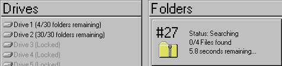

realicraft

Search through 500 compressed folders to find files and locations, and search through all of them to win.
Certain files are both locations to check and items to find.
Depending on chosen settings, some folders will have locations for opening them.
Additionally, the in-game shop may also have locations that can be purchased.
Data is accurate for the latest APWorld version (0.2.1).
| Feature | Description |
|---|---|
| Locations | Depending on settings, between 37 and 637 locations. |
| Items | 6 unique progression items, 13 unique useful items, 3 unique filler items, and 6 unique traps. |
| Goal | Search through all 500 compressed folders. |
| Traps | Contains six unique traps: the Slowdown Trap, the Crash Trap, the Bankrupt Trap, the Task Failure Trap, the Keyless Trap, and the Out of Business Trap. |
| Protocols | Supports the Death Link and Trap Link protocols, with support for Scout Link being planned for a future update. |
| Options | Seven options to control location count, item rate, Death and Trap Link, and how strict the logic is. |
Click here to download the latest client release (0.2.0).
| Version | Patch notes | Download |
|---|---|---|
| 0.2.0 | Initial release with Archipelago support. | Download |
Click here to download the latest APWorld release (0.2.1).
| Version | Patch notes | Download |
|---|---|---|
| 0.2.1 | Patched a bug that prevented shop locations from being generated. | Download |
| 0.2.0 | Initial release. | Download |